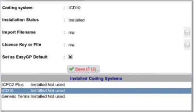
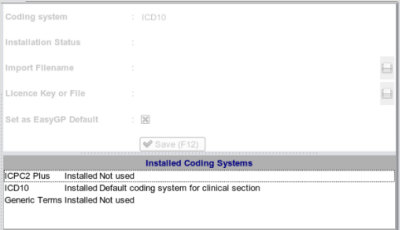

|  | First select the coding system from the list you wish to set as default, the data will apear in the The Edit Area Click on the checkbox labelled 'Set as EasyGP Default' until it contains a cross as shown below: |
|  | After clicking the save button, the list is updated to reflect the changes: |